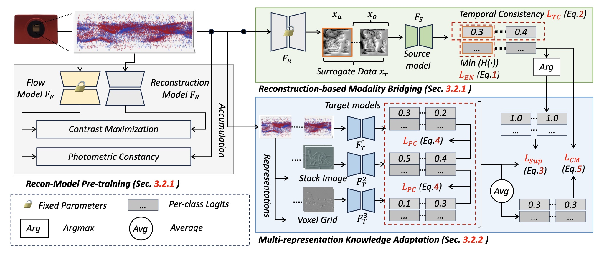

EventDance: Unsupervised Source-free Cross-modal Adaptation for Event-based Object Recognition
Accepted to CVPR 2024
-

Xu Zheng*
AI Thrust, HKUST(GZ)
-

Addison Lin Wang
AI & CMA Thrust, HKUST(GZ)
Dept. of CSE, HKUST

Abstract
In this paper, we make the \textbf{first} attempt at achieving the cross-modal (\ie, image-to-events) adaptation for event-based object recognition \textbf{without accessing} any labeled source image data owning to privacy and commercial issues. Tackling this novel problem is non-trivial due to the novelty of event cameras and the distinct modality gap between images and events. In particular, as only the source model is available, a hurdle is how to extract the knowledge from the source model by only using the unlabeled target event data while achieving knowledge transfer. To this end, we propose a novel framework, dubbed \textbf{EventDance} for this unsupervised source-free cross-modal adaptation problem. Importantly, inspired by event-to-video reconstruction methods, we propose a reconstruction-based modality bridging (\textbf{RMB}) module, which reconstructs intensity frames from events in a self-supervised manner. This makes it possible to build up the surrogate images to extract the knowledge (\ie, labels) from the source model. We then propose a multi-representation knowledge adaptation (\textbf{MKA}) module that transfers the knowledge to target models learning events with multiple representation types for fully exploring the spatiotemporal information of events. The two modules connecting the source and target models are mutually updated so as to achieve the best performance. Experiments on three benchmark datasets with two adaption settings show that EventDance is on par with prior methods utilizing the source data.
Overall framework of our EventDance
An overview of our EventDance.
BibTeX
@article{,
title={EventDance: Unsupervised Source-free Cross-modal Adaptation for Event-based Object Recognition},
author={Zheng,Xu and Wang,Lin},
journal={CVPR},
year={2024}
}